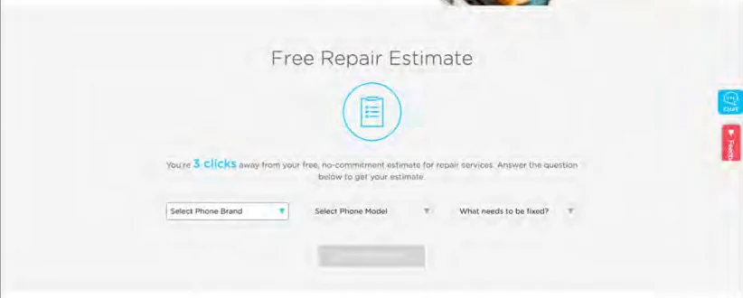
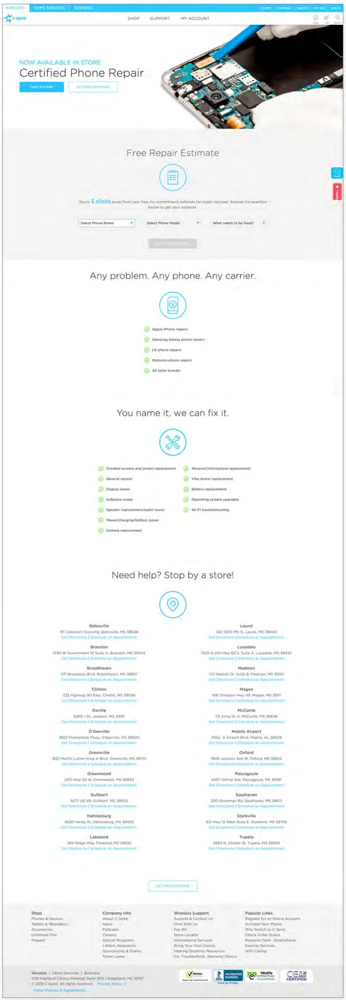
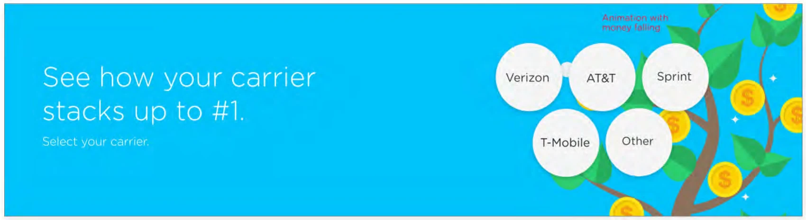
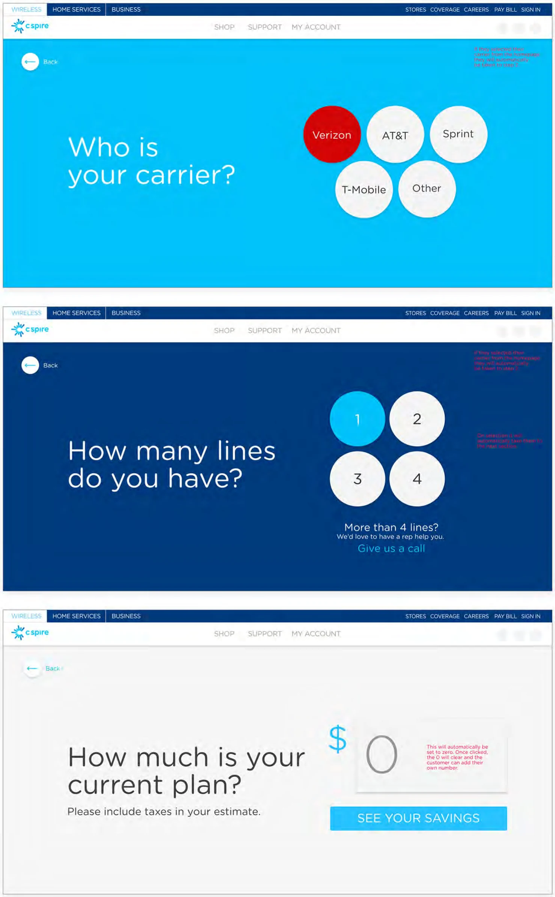
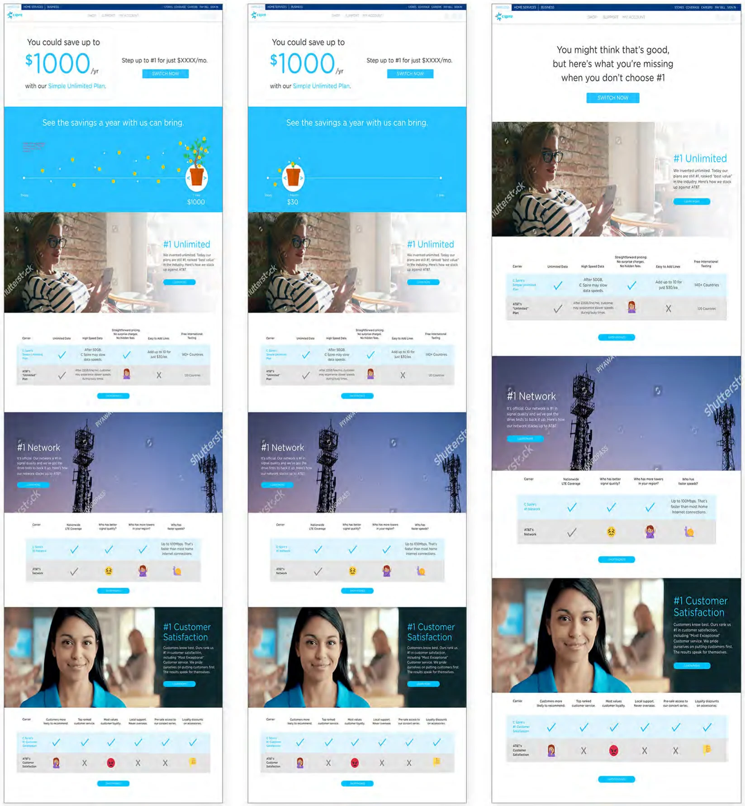
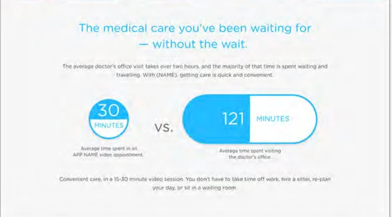
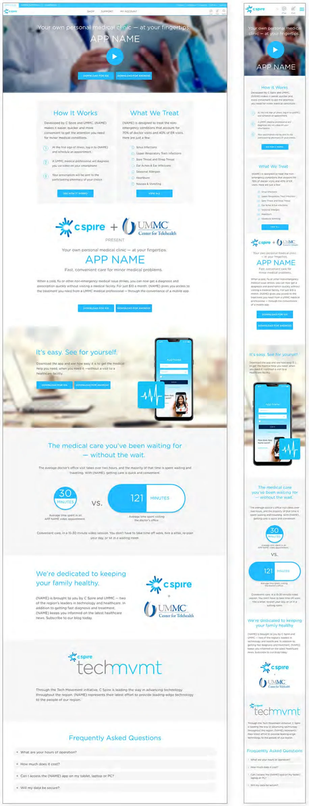
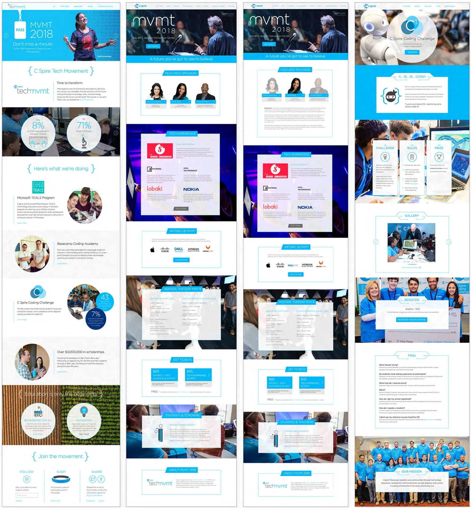
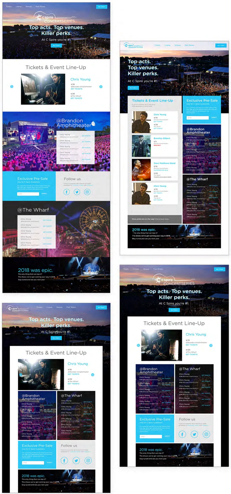

Eight years of designing and building for a regional carrier.
As a UX Developer at C Spire, I designed pages and then built their front end. The work ranged from full redesigns of the wireless, business and careers sites to one-off launches. The pages below launched while I was there. Most have since been replaced, so the screens come from my portfolio at the time.
Repair Center: fix it instead of replacing it
In 2018, C Spire started offering certified phone repair in its stores, for less than other repair shops charged. The idea was simple: a cracked screen or a dying battery shouldn’t mean buying a new phone. Repairing saves people money and keeps working phones out of the landfill. I designed and built the landing page that introduced the service.

- The estimate comes first. Cost is the first thing people want to know, so the estimate sits directly under the headline.
- Any phone, any carrier. The page says plainly that you don’t need to be a C Spire customer.
- The list of fixes is a checklist. People can scan it for their problem, from cracked screens to charging issues.
- A store near you. Every repair location has directions and a link to book an appointment.

Carrier comparison tool and the money tree
A tool that let people compare their current carrier bill with C Spire in three quick questions. I designed it, including the animation: coins falling from a money tree on the home page, and a plant that grows along a savings timeline on the results page. [CONFIRM: did this tool launch, or was it the Concert Series that went live?]



Telehealth app launch page
A launch page for a telehealth app built by C Spire and UMMC. It had a lot to explain (how it works, what it treats, who’s behind it, FAQs), so I designed and built a page that people could scan in order.


Techmvmt and the Concert Series
Techmvmt was C Spire’s umbrella for tech education in Mississippi: the MVMT conference, the C3 student coding challenge, Microsoft TEALS, coding academies and scholarships. New pieces kept being added, so I built a shared visual language they could all use rather than designing each page from scratch.

C Spire Concert Series
A landing page for C Spire’s concert series at its two main venues. It needed to show featured artists, dates by venue, ticket links and a customer-only pre-sale. I explored several layouts built around the event photography we had.

What this role taught me
Designing what I’d also build
I worked in the design files and the code, sometimes on the same day. Knowing what was easy or expensive to build made my designs more realistic, my handoffs cleaner, and my conversations with engineers more honest.
Lead with what people came for
The repair estimate went above the fold. So did the carrier choice in the comparison tool and the time comparison on the telehealth page. Each page opened with the answer people were looking for.
Design for the unfavorable result too
The comparison tool couldn’t always beat someone’s current price. Rather than hide that outcome, I designed a separate results page for it that acknowledged their deal and made the case on network and service.
Build systems for things that keep growing
Techmvmt kept adding events and programs. A shared set of patterns meant each new page fit in on day one.
Beyond these pages, I also designed and built three flagship redesigns (the consumer wireless site, the business site and the careers site), plus eight years of promotions, device pages and support flows.
Let's talk.
I love talking about design and hard problems. Drop me a line or connect on LinkedIn. I'd love to hear from you.